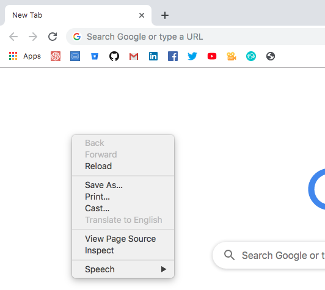

Computer Programming
What is computer programming?
Computer programming is the act of writing computer codes that performs a particular task.
The writing is done using a specific computer programming language.
People who write these computer codes can be generally referred to as computer programmers.
What is a programming language?
A programming language, similar to human language, is a set of rules and principles that govern the creation of the codes.
These rules and principles are primarily called syntax. It is this syntax that makes a set of codes understandable by computer programmers and also by the computer.
What is JavaScript
JavaScript (JS) is a dynamic programming language with first-class functions. It is this nature of JavaScript that makes it so flexible to a point of almost being limitless.
Though JavaScript was formerly known as a scripting language for front-end of websites, it has been adopted for variety of use-cases such as scripting language for backend and command-line interface with
NodeJS, robotics with Johnny-Five and database with Apache CouchDB.
What you will learn from this book
In this book I'm hoping to teach you how to program with JavaScript, we are going to use it specifically for the front-end web development, but majority of the knowledge you will learn are tranferrable to
NodeJS since the two are closely related to each other. So you would still be able to move to NodeJS after learning from this book. Yes, we will have another book that will talk about NodeJS in particular.
Getting started
You can quickly run the codes that you will find on this book using your google's web browser. I recommend that you use the most latest version.
Step 1

Open a new empty tab and right side on any white on the page to get the output you see on the screenshot above. Then click on the inspect element.
Step 2
Another panel will appear, the location of the panel will be different based on your browser's settings.
It could be at the bottom as shown in the screenshot below

It could also be on the right side as shown in the screenshot below
You can always change this by looking for the 3 vertical dots on the right most side of the panel, and then look for the dock side and then click on the right most option which will put the panel on the right side of the window.
Step 3
Click on the console tab, and you will see the console, mine is shown below
Do note that I typed in You can type source codes here on the console.
Step 4
Try writing some codes there.
alert('You did it! Congratulations!');
The codes above will produce the following output: